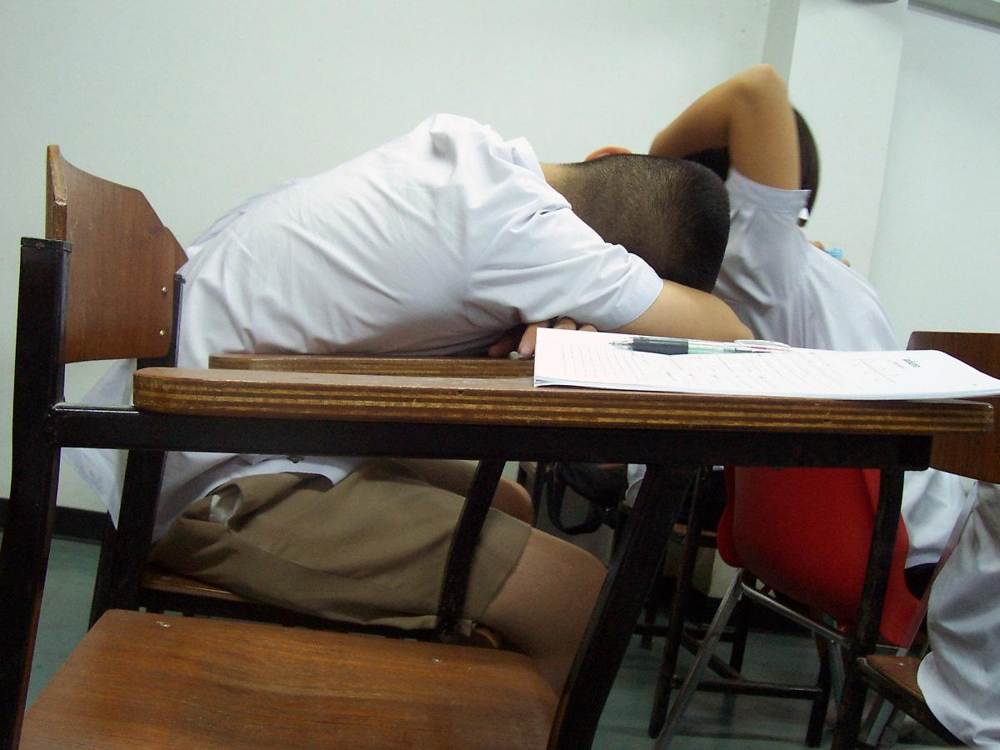

Imtihon oldidan tun bo'yi o'qish foydami?
Ertaga imtihon, kitob hali tugamagan — “bir kecha uxlamasam nima bo'pti?” Tadqiqotlar javobi aniq: uxlamagan miya o'qiganini yo'qotadi.

Tasavvur qiling: kun bo'yi o'qigan narsalaringiz miyada vaqtinchalik “qoralama” sifatida turadi. Ularni uzoq muddatli xotiraga ko'chirish asosan tunda, chuqur uyqu paytida sodir bo'ladi. Olimlar buni xotiraning konsolidatsiyasi deb atashadi: miya kunduzgi taassurotlarni qayta “aylantirib”, po'stloqqa (korteksga) mustahkam joylashtiradi.
Tajriba: so'zlar va uyqu
2006-yilda nemis olimlari Gais, Lukas va Born maktab o'quvchilariga ingliz tilidagi so'zlarni yodlatishdi. O'rganganidan keyin bir necha soat ichida uxlagan o'quvchilar so'zlarni uzoq vaqt hushyor qolganlarga qaraganda yaxshiroq eslab qolishdi. O'rganilgan kechasi uxlamaganlar esa keyin to'yib uxlab olishganida ham orqada qolishdi.

Uxlamaslik — o'qiganingizni tunda saqlash tugmasini bosmasdan kompyuterni o'chirish bilan teng.
Eng xavflisi — o'zingizga ishonch
Uyqu bo'yicha tadqiqotchi Jun Pilcher laboratoriyasining ishlari qiziq bir narsani ko'rsatgan: uyqusiz odamlar natijasi yomonlashib borayotgan bo'lsa ham, o'zini yaxshi bajaryapman deb hisoblashda davom etadi. Ya'ni tun bo'yi o'qigan talaba ertalab “tayyorman” deb his qiladi — lekin xotira va diqqat aslida pasaygan bo'ladi.
Unda qanday tayyorlanish kerak?
- Oldindan boshlang. Texas A&M universiteti uyqu tadqiqotchisi Devid Ernest imtihondan 3–4 kun oldin kuniga bir necha marta 20–30 daqiqadan o'qishni maslahat beradi.
- Odatdagi vaqtda yoting. Odatiy uxlash vaqtigacha o'qing, to'liq uxlang.
- Ertalab takrorlang. Biroz erta turib, asosiy mavzularni yana bir bor ko'rib chiqing.
- Yangi so'zlarni kechqurun yodlang. O'rganishdan keyin tez orada uxlash eslab qolishga yordam beradi.
SAT, IELTS yoki FLEX testidan oldingi kecha — yangi mavzu o'rganish vaqti emas. U vaqtda eng foydali “mashg'ulot” — uyqu.
Manbalar: Gais, Lucas, Born, “Sleep after learning aids memory recall”, Learning & Memory, 2006; Pilcher laboratoriyasi (Clemson universiteti) tadqiqotlari; Texas A&M universiteti, D. Earnest tavsiyalari (Sleep Review). Matn — o'zbek tilidagi erkin qisqacha bayon.